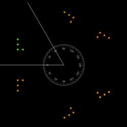
ພາບຈາກແວ່ນແຍງສອງແຜ່ນ
Yi-Ting Tu
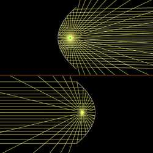
ແວ່ນແຍງປາຣາໂບນ
Paul Falstad
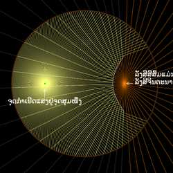
ແວ່ນແຍງໄຮເປີໂບນ
Stas Fainer
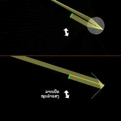
ອຸປະກອນສະທ້ອນແສງກັບຄືນ
Stas Fainer, Yi-Ting Tu
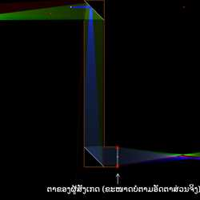
ກ້ອງເປຣິສໂຄບ
Stas Fainer
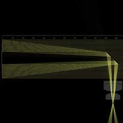
ກ້ອງໂທລະທັດແບບນິວຕັນ
Matteo Ricci Cipolloni
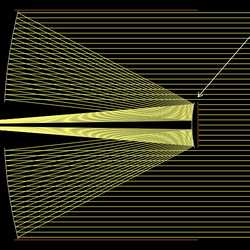
ກ້ອງໂທລະທັດແບບກາດເຊີແກຣນແບບດັ້ງເດີມ
bird0cosmic
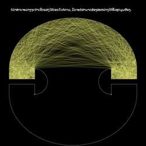
ຫ້ອງທີ່ບໍ່ສາມາດສ່ອງສະຫວ່າງໄດ້ທົ່ວເຖິງຂອງ PenroseBeta
Vincent Fan, Yi-Ting Tu
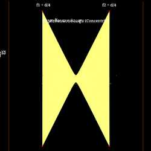
ຊ່ອງສະທ້ອນແສງແບບສອງແວ່ນແຍງ
Stas Fainer
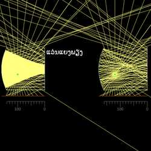
ຊ່ອງສະທ້ອນແບບພຽງ-ຫຼຸບ
Mikhail Kochiev
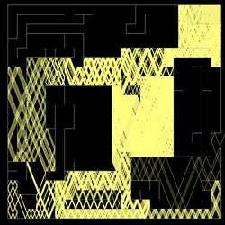
ທາງອອກເຂົາວົງກົດ
Stas Fainer, Yi-Ting Tu
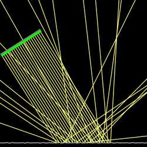
ການສະທ້ອນແບບສະໝ່ຳສະເໝີ ແລະ ແບບກະຈັດກະຈາຍ
Steve Stonebraker
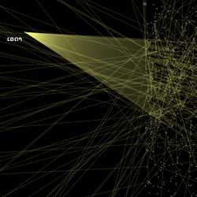
ມາດຕະການຕອບໂຕ້ດ້ວຍແຜ່ນໂລຫະສະທ້ອນຄື້ນ (Chaff)
Stas Fainer, Yi-Ting Tu

ເສັ້ນລວມແສງ (Caustics) ຈາກໜ່ວຍກົມສະທ້ອນແສງ
Georg Nadorff
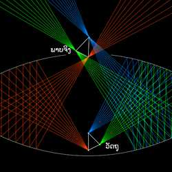
ເຄື່ອງສ້າງພາບລວງຕາໄມຣາສໂຄບ (Mirascope)
Mario Petitclerc
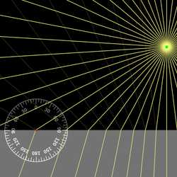
ການສະທ້ອນ ແລະ ການຫັກເຫ
Paul Falstad
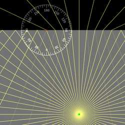
ການສະທ້ອນພາຍໃນ
Paul Falstad
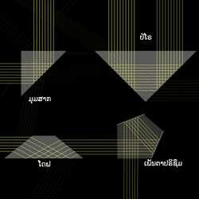
ປຣິຊຶມ
Paul Falstad
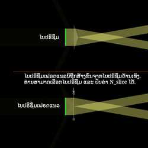
ອຸປະກອນບ່ຽງເບນລຳແສງ
Stas Fainer
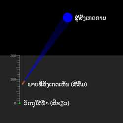
ຄວາມເລິກປາກົດ
Yi-Ting Tu
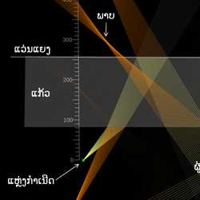
ການບິດເບືອນໃນແວ່ນປ່ອງຢ້ຽມ ແລະ ແວ່ນແຍງເບື້ອງຫຼັງ
Shahar Seifer
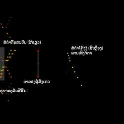
ສໍດຳໂຄ້ງງໍ
Stas Fainer
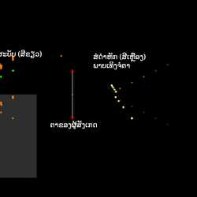
ສໍດຳຫັກ
Stas Fainer
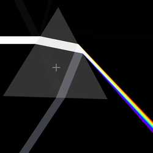
ການກະຈາຍແສງສີ
Yi-Ting Tu
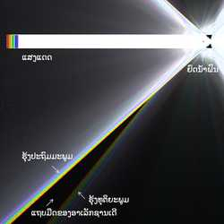
ຮຸ້ງກິນນ້ຳ
Yi-Ting Tu
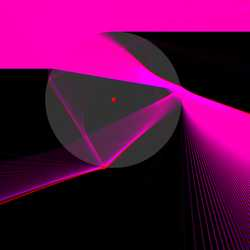
ມຸມບ່ຽງເບນຕ່ຳສຸດ
Stas Fainer
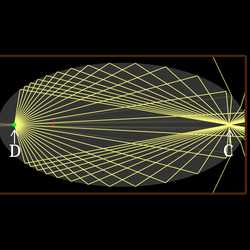
ຈຸດອະພລາເນຕິກ
Stas Fainer

ເລນຫຼຸບ
Paul Falstad
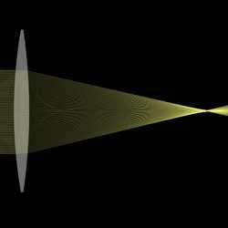
ເລນສວດ
Paul Falstad

ພາບຈາກເລນ
Paul Falstad
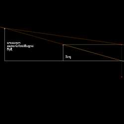
ການເກີດພາບລວງຕາ
Daniel Anya

ອັດຕາຂະຫຍາຍຕາມລວງຂວາງ ແລະ ຕາມລວງຍາວ
Stas Fainer
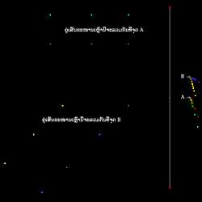
ຈຸດຫາຍ (Vanishing point)
Stas Fainer
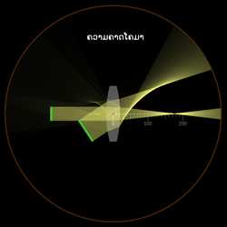
ຄວາມຄາດສີດຽວ (Monochromatic aberrations)
Paul Falstad, Stas Fainer

ຄວາມຄາດສີ
Yi-Ting Tu

ທິດທາງການຈັດວາງເລນພຽງ-ສວດ
Matthias Guillon
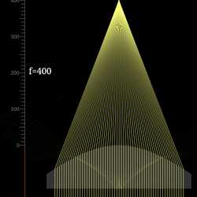
ເລນໄຮເປີໂບນ
Stas Fainer
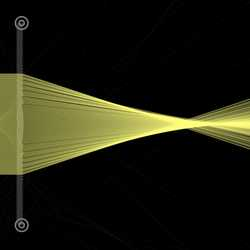
ເລນເຟຣດແນລ (Fresnel lens)
Stas Fainer, Yi-Ting Tu
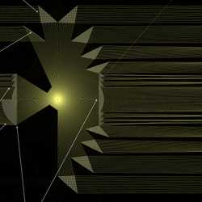
ອຸປະກອນແສງປະພາກອນຂອງໂອກຸດສະຕັງ ເຟຣດແນລ
Richard Ruh
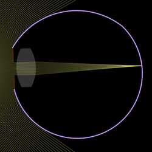
ລະບົບແສງຂອງຕາມະນຸດ
bri
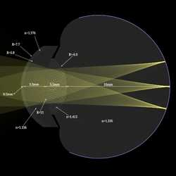
ຕາແບບຈຳລອງ (Schematic Eye)Beta
Yoyobuae
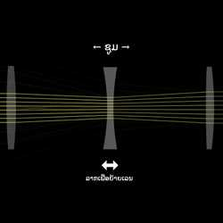
ເລນຊູມ
Paul Falstad
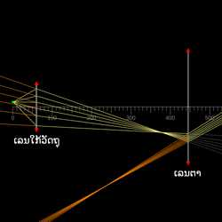
ກ້ອງຈຸລະທັດແບບປະກອບ
Yi-Ting Tu
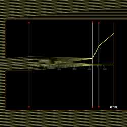
ກ້ອງໂທລະທັດ
Stas Fainer
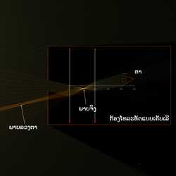
ກ້ອງໂທລະທັດແບບເຄັບເລີ (Keplerian telescope)
chuangyu J
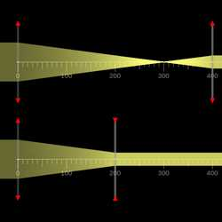
ອຸປະກອນຂະຫຍາຍລຳແສງ
Stas Fainer

ການສົ່ງຕໍ່ລັງສີ
Stas Fainer
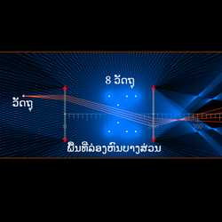
ຜ້າຄຸມລ່ອງຫົນລໍເຊັສເຕີ (Rochester cloak)
Stas Fainer
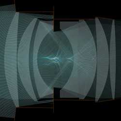
ເລນດັບເບິນກາວສ໌ (Double-Gauss Lens) ແບບງ່າຍ
Alex
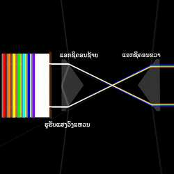
ແອກຊິຄອນ (Axicon) ສອງອັນທີ່ສ້າງວົງແຫວນຮຸ້ງ
Peter Becher
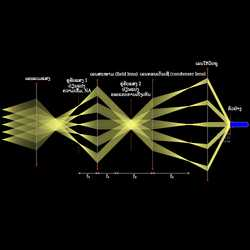
ການຈັດແສງແບບເຄີເລີ (Köhler Illumination)
Leon Seidel
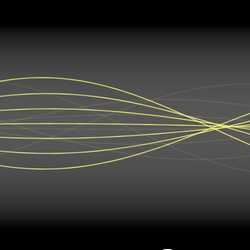
ແຜ່ນ GRINBeta
Stas Fainer, Yi-Ting Tu
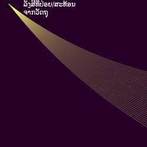
ມິຣາຈລຸ່ມ (Inferior mirage)
Stas Fainer
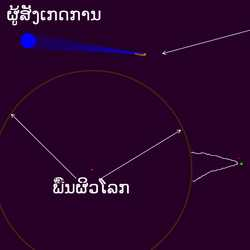
ມິຣາຈທະເລ
chuangyu J

ເສັ້ນທາງລັງສີແບບກຽວລໍກາລິດ
Stas Fainer
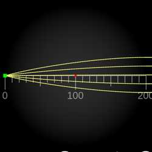
ເລນລູເນເບີກ (Luneburg lens)Beta
Stas Fainer, Yi-Ting Tu
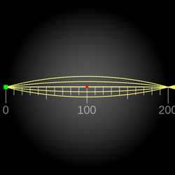
ເລນຕາປາຂອງແມັກສະເວນ (Maxwell fisheye lens)Beta
Stas Fainer, Yi-Ting Tu

ການໄຫຼແບບແຕກກິ່ງ (Branched flow)
Yi-Ting Tu
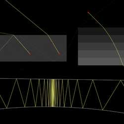
ສາທິດລັງສີດຽວ
Yi-Ting Tu

ເລນກົມ ແລະ ແວ່ນແຍງ
Yi-Ting Tu
ຫ້ອງສືບສວນ
Stas Fainer
ກ້ອງອອບສກູຣາ (Camera obscura)
Stas Fainer
ຫຼັກການສ້າງພາບຂອງກ້ອງຖ່າຍຮູບ
Liu Quanhong
ກ້ອງດິຈິຕອນ
Jorge Bodroghy Leite
ກ້ອງສ່ອງທາງໄກ NL
Wen Zhou

ວົງແຫວນໄອສະໄຕນ໌ຖືກລວມແສງໃໝ່ໃຫ້ເປັນພາບດຽວຜ່ານເລນຕາ
Jordan Anderson
ສາທິດ "ແມວດຳກາຍເປັນສີຂາວ"
Victory Science, Yi-Ting Tu
ອຸປະກອນແຍກ ແລະ ລວມແສງ RGB ແບບໄດໂຄຣອິກ (Dichroic)
James Garrard
ພິກເຊລ LCD
James Garrard
ຈໍສະແດງຜົນແບບສວມໃສ່ທີ່ໃຊ້ແວ່ນແຍງຫຼຸບ
Rene
ເຄື່ອງແຍກແສງສີດຽວແບບສະທ້ອນ (Reflecting Monochromator)
James Garrard
ເຄື່ອງບີບອັດພາລສ໌ດ້ວຍເກຣດຕິງ (Grating Pulse Compressor)
DeadeyeSun
ສຸລິຍະຄາດ
Yi-Ting Tu
Holographic SightBeta
Zain Kalim